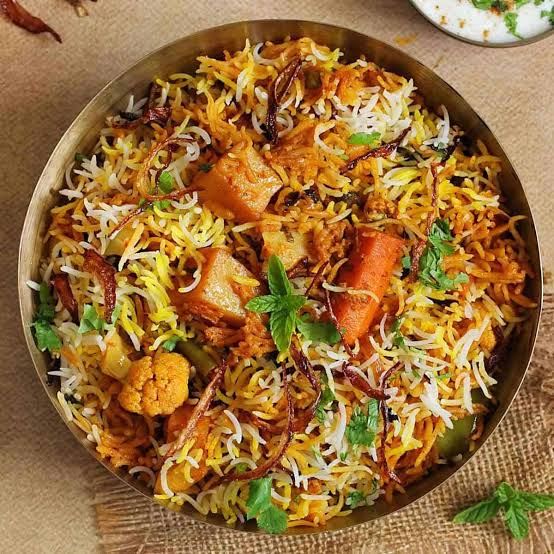
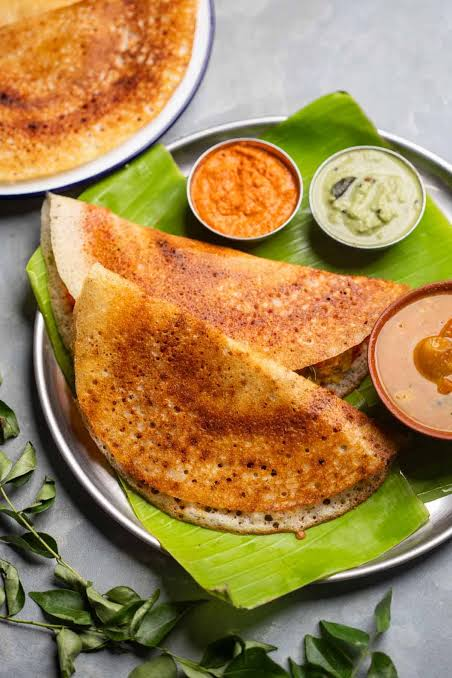
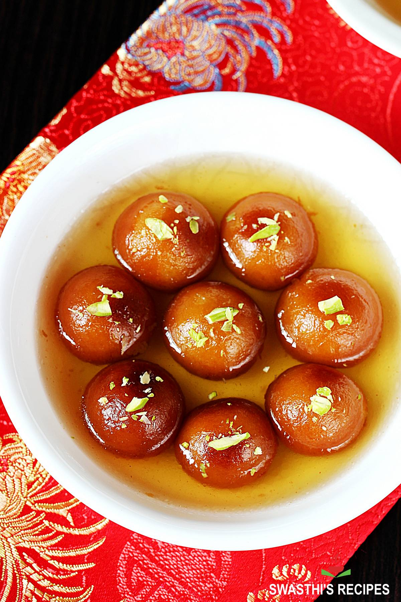

Famous Indian Foods
Indian cuisine is famous for its variety of spices, flavours, and
traditional recipes. Every region has its own special dishes, from
tasty street food to delicious desserts.
Five Famous Indian Dishes
- Biryani
- Masala Dosa
- Butter Chicken
- Chole Bhature
- Gulab Jamun
Food Categories
- North Indian
- South Indian
- Street Food
- Desserts
About Some Indian Dishes
- Biryani
- A fragrant rice dish cooked with spices and vegetables or meat.
- Masala Dosa
- A crispy South Indian crepe filled with spiced potato.
- Gulab Jamun
- A popular sweet made from milk solids and served in sugar syrup.
Food Photos
Biryani

Masala Dosa

Gulab Jamun

Explore More
Home |
Destinations |
Places |
Gallery |
Contact
Back to Top